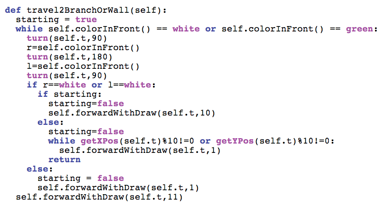
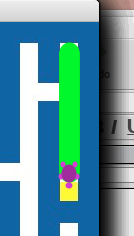
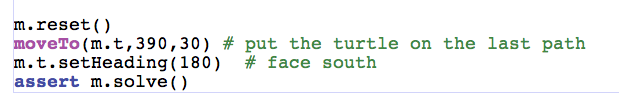
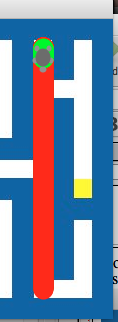
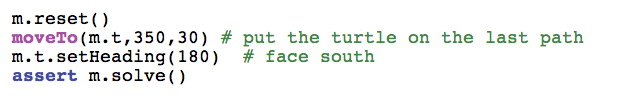
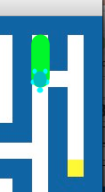
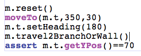

CSI 106 Muhlenberg College - Michael Toth
Page 21
| Here's the corrected travel2BranchOrWall |
 |
| Now let's see how it does on the test we were trying to use
earlier.  I can see now why it doesn't try the branch. It always tries to go in the same direction it is headed and of course then solves the maze. So this is still a green condition. Let's try it from a little farther away. |
 |
| For this test, the turtle gets into an endless loop.
Some more debugging is needed.  This is too complicated a situation to test entirely, we want to check to see what exactly the turtle is doing. We will go step by step. Comment out this test so we can skip it for now. |
 |
| The first step is where we expect the turtle to stop
initially. That
would be at the coordinates 350,70.  The next step is to see if it stops at the next intersection. Normally the turtle would continue forward at this point according to our algorithm. |
 |
We continue to add pieces to our test to check each leg of
the turtle's journey.  |
 |
Things are still behaving well.  Now the next step for solve is to try to go forward. It can't so it tries to go right. It can't so it tries to go north and then east. Here we can see a problem. We end up backtracking before we investigate the path to the left. Ideally we want to discover the dead end before we backtrack. This means we should change the search order so our last choice is to backtrack. |
 |